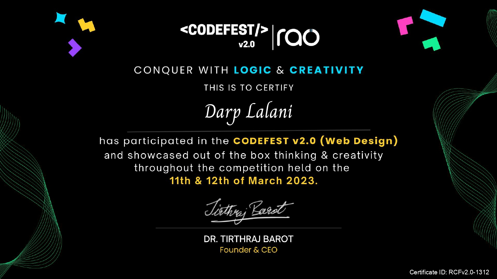

Darp Lalani
Hello! I’m Darp Lalani, a final year Diploma in Computer Engineering student at Darshan University. With a passion for technology and innovation, I have developed skills in programming, software development, and problem-solving. I thrive in collaborative environments and am eager to apply my knowledge to real-world projects. I’m actively seeking opportunities to contribute to exciting tech initiatives and further enhance my expertise. Let’s connect and explore the future of technology together!
Education
Darshan University
CGPA: 8.92
Skills
Interests
I am passionate about cybersecurity, dedicated to protecting digital information and systems from threats. With a strong foundation in computer engineering, I want to develop skills in network security, ethical hacking, and risk assessment. I enjoy staying updated on the latest security trends and technologies.
I’m eager to apply my knowledge in real-world scenarios. My goal is to contribute to safeguarding sensitive data and enhancing organizational security.
Awards & Certifications
-

Python - Google Certification -

HTML,CSS and JAVASCRIPT - IBM Certification -

Participated in Web Designing - CODEFEST Certification